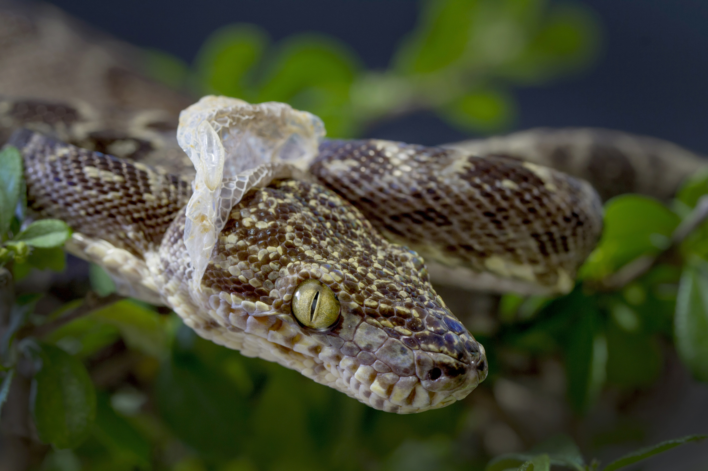
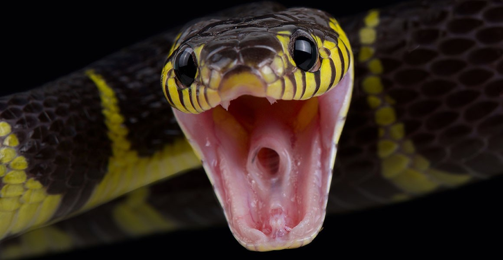

sürünənlər sinfinin pulcuqlular dəstəsinə aid yarımdəstə. Antarktikadan başqa bütün qitələrdə rast gəlinir. İlanlar elastik çənə quruluşuna sahibdir. Bununla da böyük canlıları uda bilirlər.İlanların çoxu zəhərsizdir. Zəhərsiz ilan növləri ovlarına dolanaraq onları boğur. İlanların zəhərli növləri isə zəhərdən ovlanmaq, yaxud özlərini qorumaq məqsədi ilə istifadə edirlər. İlanlar həşərat, qurbağa, quş, balıq, kərtənkələ, siçan, yumurta və s ilə qidalanır. İlanları öyrənən elm serpantologiya adlanır.
İlan dərisi pulcuqlarla örtülüdür, hamar və quru quruluşa malikdir. İlanların qarın və bel pulcuqlarının quruluşu fərqlidir. Dəri rəngləri çox müxtəlidir. Bəziləri bir rəngə, bəziləri isə 3–4 rəngə sahibdir. Rəngli ilanlar, əsasən, zəhərlidir. Ancaq zəhərli olmayan rəngli ilanlar da var. Rəngli dəri təhlükəni bildirir və düşmənləri qorxutmaq üçün istifadə olunur, amma bu o demək deyil ki, birrəngli ilanların dəriləri qorunmaq üçün əlverişsizdir. Birrəngli ilanların rəngi daha çox bozumtul, qəhvəyi və qara rəngli olur ki, bu rənglər də torpaqda, qumda, daşda gizlənmək üçün (kamuflyaj) ideal rənglərdir.
İlan zəhəri bəzi ilanların tüpürcək vəzilərinin zəhərli ifrazatı. İlan zəhəri rəngsiz, sarımtıl, yaxud yaşıla bənzər duru mayedir. İlan zəhəri müalicə əhəmiyyətlidir.İlan zəhərini qurudulmuş halda 23-ilə qədər saxlamaq olur. Zəhərli ilanlar mühafizə olunur. Abşeron yarımadası Şahidli burnunda 3 min gürzə saxlanan qoruq var.Azərbaycanda 23 ilan növü mövcuddur. İlanlar, siçan, ilbiz, həşərat, quş yumurtası və s. ilə qidalanır.
